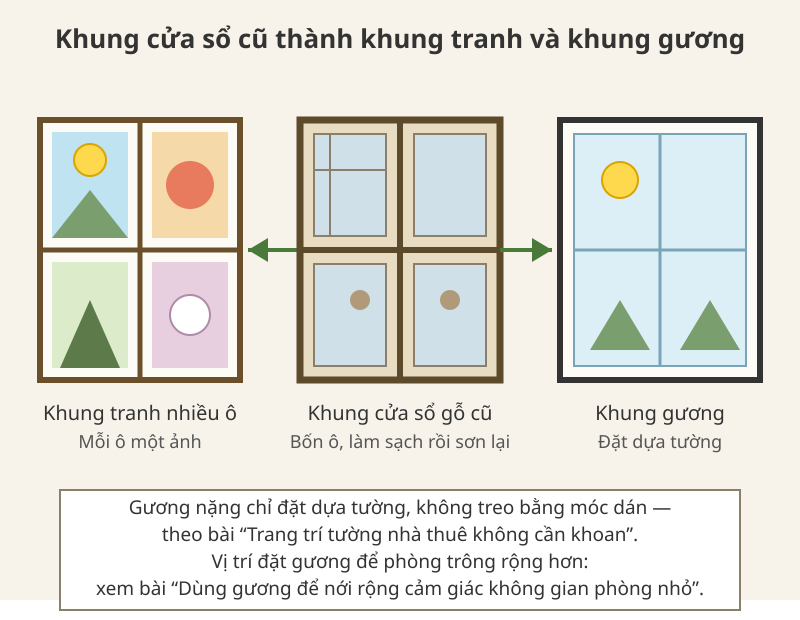

Tận dụng khung cửa sổ cũ làm khung tranh và gương trang trí
Một khung cửa sổ gỗ cũ tháo ra từ nhà đang sửa thường bị coi là đồ bỏ đi: sơn đã bong vài chỗ, kính đã mờ, bản lề đã rỉ. Nhưng nếu bạn nhìn khung cửa sổ đó như một chiếc khung tranh đã làm sẵn, mọi chuyện đổi khác. Khung cửa sổ vốn đã có sẵn các ô kính chia đều và các thanh gỗ chắc — đúng thứ mà một chiếc khung tranh lớn hay một chiếc gương trang trí cần có. Bạn chỉ cần làm sạch khung cũ, sơn lại, rồi gắn tranh hoặc gắn gương vào các ô cửa.
Bài viết này hướng dẫn tận dụng khung cửa sổ gỗ cũ thành hai món: khung tranh nhiều ô và gương trang trí dạng ô cửa sổ. Bài khác với Bài 2 ở cả vật liệu gốc lẫn món đồ làm ra: Bài 2 dùng ván gỗ pallet cũ để đóng kệ sách, còn bài này dùng nguyên một khung cửa sổ cũ để làm khung tranh và gương. Bài cũng không đụng tới việc trồng cây cảnh hay giữ hoa tươi trong nhà. Bài cũng không dạy lại cách treo tường hay cách đặt gương: gương nặng trong bài này chỉ đặt dựa tường, không treo bằng móc dán — theo Bài 4; còn vị trí đặt gương để phòng trông rộng hơn thì bạn xem Bài 11.
Khung cửa sổ cũ nào dùng được
Không phải khung cửa sổ cũ nào cũng đáng mang về nhà. Bạn đặt khung nằm phẳng trên mặt đất rồi nhìn dọc theo các thanh gỗ. Khung dùng được là khung còn thẳng, bốn góc còn vuông, các mối nối ở góc còn khít, và khi bạn lắc nhẹ khung thì khung không lung lay. Bạn dùng đầu tua vít ấn nhẹ vào vài chỗ trên thanh gỗ: gỗ còn chắc thì chỉ lõm nhẹ, gỗ đã mục thì lún sâu. Khung mà gỗ đã mềm ra trên một đoạn dài thì bạn nên bỏ.
Bạn kiểm tra tiếp từng ô kính. Kính còn nguyên, không nứt, không lung lay thì bạn có thể giữ lại làm khung tranh. Kính đã nứt hay đã vỡ thì bạn phải tháo bỏ cẩn thận trước khi làm gì khác: đeo găng tay dày và kính bảo vệ mắt, đặt khung nằm phẳng trên một tấm vải cũ, gỡ từng mảnh kính ra và gói vào thùng giấy cứng rồi mới bỏ đi. Bạn tuyệt đối không dùng kính đã nứt làm gương hay làm khung tranh, vì vết nứt nhỏ có thể lan dài ra khi khung bị va chạm hay khi bạn di chuyển khung.
Dụng cụ và vật liệu cần chuẩn bị
Bạn không cần mua bộ dụng cụ mộc mới để làm món này. Dụng cụ bạn cần có: găng tay dày, kính bảo vệ mắt, khẩu trang, tua vít, kìm, dao trét bột, giấy nhám, khăn lau, thước dây, bút chì, băng dính giấy và cọ sơn. Nếu khung có kính nứt cần tháo, bạn chuẩn bị thêm một thùng giấy cứng để đựng mảnh kính vỡ.
Vật liệu tùy theo món bạn định làm. Cho cả hai món, bạn cần chất tẩy rửa đa năng, bột trám gỗ, sơn lót, sơn màu và một lớp sơn phủ bảo vệ nếu bạn muốn mặt khung bền hơn. Cho món khung tranh, bạn cần thêm tấm bìa cứng làm tấm lót sau và tranh in vừa từng ô cửa. Cho món gương, bạn cần đặt cắt một tấm gương vừa với khung và kẹp giữ gương.
An toàn trước khi làm: kính vỡ và sơn cũ
Món đồ này có hai rủi ro cần nói trước, và cả hai đều nằm ở bước chuẩn bị. Rủi ro thứ nhất là kính cửa sổ cũ. Kính cũ thường mỏng, giòn và không phải kính an toàn, nên bạn luôn coi nó là vật sắc và dễ vỡ. Khi tháo kính, bạn đeo găng tay dày và kính bảo vệ mắt, đặt khung nằm phẳng trên một mặt phẳng có lót vải, và làm chậm rãi từng ô một. Mảnh kính vỡ bạn gói vào thùng giấy cứng, ghi chữ kính vỡ lên thùng rồi mới bỏ đi.
Rủi ro thứ hai là lớp sơn cũ trên khung. Hướng dẫn của Christina Projects, dẫn theo cơ quan bảo vệ môi trường Hoa Kỳ EPA, cho biết khoảng ba phần tư nhà ở Hoa Kỳ xây trước năm 1978 vẫn còn sơn chứa chì, và sơn chứa chì cho nhà ở đã bị cấm từ năm 1978. Con số này nói về nhà ở Hoa Kỳ, không phải nhà ở Việt Nam, nên bạn không nên lấy nó để kết luận về khung cửa sổ của mình. Điều bạn nên giữ lại là thói quen làm việc an toàn: nếu bạn không biết khung của mình bao nhiêu tuổi hay lớp sơn cũ là sơn gì, bạn hãy làm ướt bề mặt sơn trước khi chà hay cạo, dùng giấy nhám ướt, đeo khẩu trang và kính bảo vệ mắt, và dọn bụi bằng khăn ẩm thay vì quét khô. Bạn không nên chà khô, không dùng lửa trần hay súng nhiệt nhiệt độ cao để đốt sơn cũ.
Làm sạch và chà nhám khung
Bạn làm sạch khung trước khi sơn, vì bụi bẩn và dầu mỡ bám trên gỗ sẽ làm sơn mới khó bám và dễ bong sau này. Bạn quét sạch bụi trên mặt khung, nhất là ở các rãnh quanh ô kính và ở các góc. Bạn lau toàn bộ khung bằng khăn ẩm với chất tẩy rửa đa năng. Bạn lau lại bằng khăn ẩm sạch rồi để khung khô hoàn toàn ở nơi thoáng gió. Khung còn ẩm mà sơn lên thì sơn khó bám, nên bạn đừng vội.
Chà nhám là bước quyết định sơn mới có bám chắc hay không. Bạn bắt đầu với giấy nhám hạt thô, khoảng 60 đến 80, để chà những chỗ sơn đã bong và những chỗ bề mặt còn lồi lõm. Bạn chà dọc theo thớ gỗ, không chà ngang thớ gỗ, vì chà ngang dễ để lại vết xước lộ rõ sau khi sơn. Khi lớp sơn bóng cũ đã mất đi và bề mặt đã đều, bạn chuyển sang giấy nhám hạt vừa, khoảng 100 đến 150, và chà lại toàn bộ khung một lượt. Bạn chà xong thì lau lại bằng khăn ẩm hay khăn dính bụi để mặt gỗ thật sạch trước khi sơn lót. Hướng dẫn của Family Handyman nhắc rõ: mặt khung phải sạch và không còn bụi trước bước sơn lót, vì bất cứ thứ gì còn sót lại cũng làm sơn khó bám.
Sơn lại khung: sơn lót, sơn màu, sơn phủ
Sơn khung cửa sổ cũ gồm ba lớp, theo đúng thứ tự: sơn lót, sơn màu, rồi sơn phủ bảo vệ nếu cần. Bạn sơn từng lớp mỏng, để khô rồi mới sơn lớp tiếp theo. Trước khi sơn, bạn dán băng dính giấy quanh mép kính và che kính bằng giấy báo. Bạn quét một lớp sơn lót mỏng lên toàn bộ mặt gỗ. Sơn lót giúp sơn màu bám chắc hơn và làm màu sơn lên đều hơn, nhất là với gỗ cũ đã thấm màu loang lổ. Bạn để sơn lót khô hẳn theo thời gian ghi trên lon sơn. Với gỗ cũ có vết ố hay nhựa gỗ lộ ra, bạn nên sơn thêm một lớp sơn lót thứ hai.
Khi sơn lót đã khô, bạn chà thật nhẹ bằng giấy nhám hạt mịn, khoảng 220 trở lên, rồi lau bụi lại. Bạn sơn lớp sơn màu đầu tiên cũng bằng các lớp mỏng, quét dọc theo thớ gỗ, bạn đợi lớp sơn màu đầu tiên khô hẳn rồi mới sơn lớp tiếp theo. Hướng dẫn của Family Handyman nhắc rằng nhiều lớp mỏng luôn tốt hơn một lớp dày, và bạn nên đợi đủ thời gian khô giữa các lớp theo hướng dẫn trên lon sơn.
Sau khi lớp sơn màu cuối cùng đã khô, bạn bóc băng dính giấy quanh kính ra, kéo băng chéo một góc khoảng 45 độ. Bạn để khung khô hoàn toàn ít nhất 24 giờ trước khi di chuyển hay gắn tranh và gương vào, theo hướng dẫn của Family Handyman. Thời gian làm xong một khung cửa sổ cỡ vừa chỉ là ước chừng, chưa đo thực tế: làm sạch và chà nhám khoảng một buổi, sơn khoảng hai buổi tối, gắn tranh hoặc gắn gương khoảng một buổi nữa.
Làm khung tranh từ khung cửa sổ cũ
Khung tranh từ khung cửa sổ cũ tận dụng đúng điểm đặc biệt của nó: mỗi ô kính là một khung ảnh nhỏ, và cả khung lớn là một bộ sưu tập ảnh treo trên tường. Bạn đo từng ô cửa ở mặt trong của khung, rồi in tranh hay ảnh vừa với từng ô. Bạn có thể in mỗi ô một ảnh khác nhau, ví dụ ảnh chụp các chuyến đi, ảnh gia đình, hay tranh vẽ tay của trẻ nhỏ trong nhà.
Bạn gắn tranh vào khung theo cách đơn giản nhất: đặt khung nằm úp mặt xuống bàn, đặt tranh vào từng ô từ mặt sau, rồi đặt một tấm bìa cứng lên trên toàn bộ mặt sau để giữ tranh.
Bạn nên chọn tranh có màu sắc liên quan tới nhau, thay vì mỗi ô một màu hoàn toàn khác nhau. Bạn nên chọn một màu dẫn từ một món đồ đã có trong phòng, như màu rèm hay màu vỏ gối, rồi chọn tranh có màu đó. Khung tranh làm từ khung cửa sổ cũ hợp nhất với mảng tường trống phía trên ghế ngồi hay phía trên tủ thấp trong phòng khách nhỏ.
Làm gương từ khung cửa sổ cũ
Gương từ khung cửa sổ cũ là món hợp với phòng nhỏ nhất trong hai món của bài này, vì nó vừa là đồ trang trí vừa giúp phòng trông sáng hơn. Bạn đo khoảng trống bên trong khung, từ mép trong này sang mép trong kia. Hướng dẫn của From House to Home gợi ý cộng thêm khoảng 1,3 cm vào mỗi số đo, để tấm gương chồng lên khung một chút ở cả bốn phía mà vẫn còn chỗ để lắp kẹp giữ gương. Bạn mang số đo này ra tiệm kính để đặt cắt gương. Cũng theo hướng dẫn này, bạn nên chọn gương dày ít nhất khoảng 6 mm để gương đủ cứng và bền, và chỉ dùng gương có cạnh đã mài nhẵn.
Trước khi gắn gương, bạn tháo hết kính cũ ra khỏi khung. Bạn tuyệt đối không gắn gương chồng lên kính cũ đã nứt, và không dùng kính cửa sổ cũ đã nứt làm gương, vì kính nứt có thể vỡ thêm khi bạn di chuyển khung.
Bạn đặt khung nằm úp mặt xuống một mặt phẳng mềm, rồi đặt tấm gương lên mặt sau của khung, mặt phản chiếu hướng ra mặt trước, căn cho gương nằm giữa khung. Bạn lắp kẹp giữ gương quanh mép gương, khoảng 20 đến 25 cm một kẹp, theo hướng dẫn của From House to Home. Bạn vặn kẹp vừa đủ chặt để gương không xê dịch khi bạn lắc nhẹ khung, nhưng không vặn quá chặt, vì ép quá mạnh có thể làm gương nứt.
Về cách đặt gương, bài này chỉ nhắc một giới hạn: gương làm từ khung cửa sổ cũ cộng với khung gỗ là món nặng, nên bạn chỉ đặt gương dựa tường, không treo bằng móc dán — theo Bài 4. Cách đặt gương dựa tường an toàn đã có đầy đủ trong Bài 4, bạn nên xem Bài 4 trước khi đặt gương. Còn vị trí nào trong phòng đặt gương thì hợp, vị trí nào nên tránh, bạn xem Bài 11.
Chọn kiểu khung theo phòng
Khung cửa sổ cũ có nhiều kiểu, và mỗi kiểu hợp với một phòng khác nhau. Bạn không cần tìm đúng kiểu khung đẹp nhất trên mạng, bạn chỉ cần chọn kiểu khung hợp với phòng mình đang có.
| Kiểu khung | Dấu hiệu nhận biết | Hợp với phòng nào |
|---|---|---|
| Khung bốn ô đều nhau | Bốn ô kính bằng nhau, thanh gỗ thẳng | Phòng khách nhỏ, phía trên ghế ngồi |
| Khung sáu ô nhỏ | Sáu ô kính nhỏ, thanh gỗ mảnh | Phòng ngủ nhỏ, làm tranh hoặc gương cỡ vừa |
| Khung hai ô lớn | Hai ô kính lớn, khung dày và nặng | Góc phòng rộng, làm gương lớn dựa tường |
Với khung bốn ô đều nhau, bạn nên sơn màu trắng hay trắng ngà. Với khung sáu ô nhỏ, bạn nên sơn màu theo màu đồ gỗ trong phòng. Với khung hai ô lớn, bạn nên sơn màu đậm như đen mờ hay xanh đậm, và làm món gương từ khung này thay vì làm khung tranh, vì hai ô lớn phản chiếu được nhiều ánh sáng hơn.
Bảo quản và khi nào nên nhờ thợ
Khung tranh và gương làm từ khung cửa sổ cũ không cần chăm sóc cầu kỳ, nhưng cần tránh ba thứ: ẩm, nắng gắt và va đập. Bạn nên đặt khung ở chỗ khô thoáng, tránh mảng tường hay ẩm mốc và tránh nơi gần cửa sổ hay bị mưa hắt vào. Bạn lau khung bằng khăn khô mềm và lau mặt gương bằng khăn sợi mịn, xịt dung dịch lau lên khăn thay vì xịt thẳng lên gương.
Bạn nên kiểm tra khung vài tháng một lần, nhất là kẹp giữ gương ở mặt sau và tấm bìa giữ tranh. Bạn lắc nhẹ khung để xem gương hay tranh có bị xê dịch không. Nếu kẹp giữ gương bị lỏng, bạn vặn lại cho chặt, và nếu tấm bìa sau bị ẩm hay cong thì bạn thay tấm bìa mới.
Bạn nên nhờ thợ trong ba trường hợp. Thứ nhất, khi bạn cần cắt gương lớn hay gương có hình dáng đặc biệt, bạn nhờ tiệm kính cắt và mài cạnh. Thứ hai, khi khung cửa sổ cũ có lớp sơn bong tróc nhiều mà bạn không biết đó là sơn gì, bạn nhờ người có kinh nghiệm xử lý sơn cũ tư vấn. Thứ ba, khi bạn muốn đặt khung gương lớn lên tường mà không chắc tường nhà mình chịu được, bạn nên nhờ thợ tư vấn cách cố định.
Kết luận
Tận dụng khung cửa sổ cũ làm khung tranh và gương trang trí là một dự án vừa sức với người mới, nếu bạn nhớ đúng thứ tự: chọn khung còn thẳng và còn chắc, xử lý kính vỡ và sơn cũ an toàn trước, rồi mới làm sạch, chà nhám, sơn lại, và cuối cùng mới gắn tranh hay gắn gương vào khung. Bạn chỉ cần một khung cửa sổ cũ, vài dụng cụ có sẵn trong nhà, sơn lót và sơn màu, là đã có một món đồ trang trí mà không khung mua mới nào có được: một chiếc khung đã mang sẵn hình dáng của một ô cửa sổ, với các ô kính chia đều.
Nguồn tham khảo
- Christina Projects, "Repurposing Old Windows: Safe DIY Ideas" — dùng cho các khẳng định: khoảng ba phần tư nhà ở Hoa Kỳ xây trước năm 1978 vẫn còn sơn chứa chì, sơn chứa chì cho nhà ở bị cấm từ năm 1978; làm ướt bề mặt sơn trước khi chà hay cạo, dùng giấy nhám ướt, không chà khô và không dùng lửa trần; kính cũ nứt phải thay, vết nứt nhỏ có thể lan ra khi khung bị treo hay va chạm; đeo găng tay chống cắt và kính bảo vệ mắt khi cầm khung cửa sổ, đặt khung nằm phẳng trên mặt phẳng có lót; mỗi ô cửa thành một ô khung tranh, gắn tranh sau tấm lót (truy cập 23/11/2026): https://christinaprojects.com/repurposing-old-windows-into-stunning-home-decor/
- From House to Home, "How To Make A DIY Windowpane Mirror" — dùng cho các khẳng định: đo khoảng trống trong khung rồi cộng thêm khoảng 1,3 cm vào mỗi số đo để gương chồng lên khung; tháo kính cũ phải đeo găng tay dày và kính bảo vệ mắt; chà dọc theo thớ gỗ; sơn lót giúp sơn bám chắc và lên màu đều hơn; lắp kẹp giữ gương cách nhau khoảng 20 đến 25 cm, vặn vừa chặt để gương không xê dịch nhưng không ép mạnh gây nứt; gương nên dày ít nhất khoảng 6 mm và các cạnh phải mài nhẵn (truy cập 23/11/2026): https://www.fromhousetohome.com/diy-windowpane-mirror/
- Family Handyman, "How to Paint a Mirror Frame" — dùng cho các khẳng định: chà nhám bắt đầu bằng giấy nhám hạt thô 60 đến 80, rồi chuyển sang hạt vừa 100 đến 150 khi lớp sơn bóng cũ đã mất; chà dọc theo thớ gỗ; mặt khung phải sạch và không còn bụi trước khi sơn lót, vì bụi làm sơn khó bám; sơn lót hai lớp để vết ố và nhựa gỗ không thấm lên lớp sơn màu, chà nhẹ bằng giấy nhám 220 trở lên giữa các lớp; nhiều lớp sơn mỏng tốt hơn một lớp dày; để khung khô hoàn toàn ít nhất 24 giờ trước khi di chuyển hay treo gương (truy cập 23/11/2026): https://www.familyhandyman.com/project/how-to-paint-a-mirror-frame/
Phương án ảnh

Đây là sơ đồ minh họa, không phải ảnh chụp thực hành